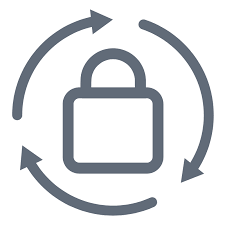

Installation & configuration
Je peux installer et configurer votre pare-feu FortiGate,(interfaces réseau, routes, DNS, NTP, etc.). La mise en place des politiques de sécurité adaptées à votre organisation. La configuration des fonctionnalités avancées comme l’IPS, l’Antivirus, le Web Filtering et l’Application Control. L’intégration avec d’autres équipements comme FortiAnalyzer, FortiManager ou FortiMail pour une gestion centralisée.
|

Optimisation du trafic réseau
Je peux vous aider à optimiser la gestion du trafic réseau en configurant le routage statique et dynamique (OSPF, BGP). Les VPN site-à-site (IPSec, SSL) pour l’accès distant sécurisé. La gestion de la qualité de service (QoS) pour prioriser certains types de trafic. La segmentation du réseau via des VLANs.
|
Sécurité & Conformité
Je peux configurer et optimiser, l’authentification des utilisateurs avec LDAP, RADIUS ou SSO. Les stratégies de protection contre les menaces avancées (IPS, Antivirus, Sandbox FortiSandbox). Le filtrage web et applicatif pour contrôler les accès des utilisateurs. La journalisation et la surveillance via FortiAnalyzer pour une meilleure visibilité et conformité aux normes de sécurité.
|
Haute disponibilité & Sauvegarde
Je peux vous aider à garantir la disponibilité de votre infrastructure en mettant en place, Une architecture HA (High Availability) en mode Active/Active ou Active/Passive. Des sauvegardes automatiques de la configuration pour une récupération rapide en cas de panne. Des plans de reprise après sinistre (DRP) incluant des configurations redondantes et des procédures de bascule.
|

Mise à niveau & Migration
Si vous souhaitez mettre à jour votre équipement FortiGate ou migrer depuis une autre solution de pare-feu, je peux vous accompagner dans, L’analyse des impacts et la planification de la migration. La mise à jour des firmwares en minimisant les interruptions de service. La migration des configurations et règles de sécurité tout en optimisant leur efficacité.
|